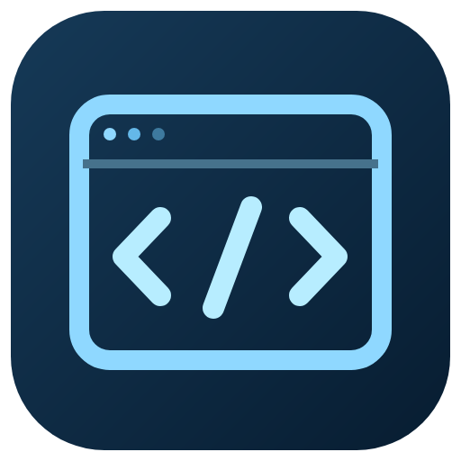
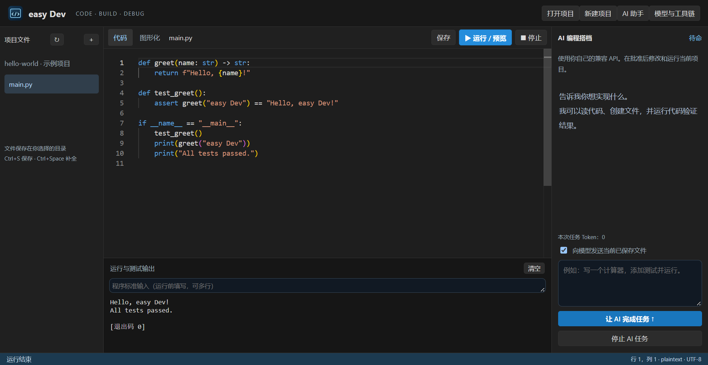
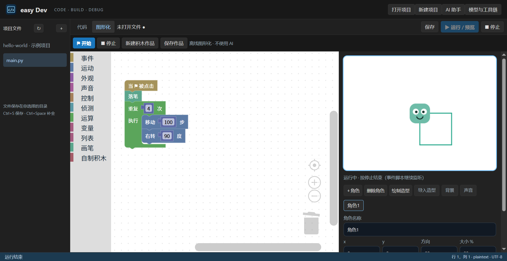

代码编辑与自动补全
支持 C++、Python、Java、HTML 的语法高亮，本地片段与词语自动补全，Ctrl+Space 呼出建议，Ctrl+S 保存。

easy Dev返回官网easy Dev 把代码编辑、运行测试、API 编程搭档和离线积木创作，放进一套紧凑的开发工具界面。
Windows 10/11 x64 · v0.1.0
默认安装 D:\easy Dev，可选择其他目录。独立安装，不包含在三款整合包中。

本机真实示例项目截图；运行输出来自本地 Python。
支持 C++、Python、Java、HTML 的语法高亮，本地片段与词语自动补全，Ctrl+Space 呼出建议，Ctrl+S 保存。
代码使用真实本机工具链运行，支持标准输入、编译错误与输出显示；HTML 在隔离窗口预览。
输入兼容 API，或关联 easy API平台设置。模型可读取当前项目，在逐次批准后创建、修改文件并运行代码。
不嵌入 TurboWarp。通过本地积木操作舞台和角色：事件、运动、外观、声音、循环、变量、列表、克隆、画笔与自制积木。图形化无 AI。

选择“新建项目”，填写名称并选择 Python、C++、Java、HTML 或图形化，再选择保存位置。
代码项目：打开文件，编辑并保存，填写需要的标准输入，然后点击运行。先安装相应的 Python、C++ 编译器或 JDK；在设置中可选择工具链 EXE。
需要 AI 时，在设置中保存 API 地址、模型与 Key，或读取 easy API平台的配置；向编程搭档描述任务，检查并批准具体文件与运行操作。
图形化项目：从类别拖出积木，连接到绿旗事件下。添加角色、导入或绘制造型与声音，点击绿旗运行，保存为 .easyblocks.json，下次离线打开。
适合编程初学者、学习多种语言的学生，以及希望让 API 助手处理小型项目的开发者。想先用积木学习事件和逻辑，也可以完全离线开始。
安装包不附带 Python、C++ 编译器、JDK 或 Node.js。当前按选中文件运行，复杂多模块构建需自行配置；补全是片段和词语建议，不是完整的 C++/Python/Java 语言服务器。
积木项目为 easy Dev 自有格式，不兼容 .sb3，没有 TurboWarp 扩展生态、全部高级积木、矢量造型编辑和像素级碰撞。它不是 TurboWarp 的完全复刻。
在线 AI 需要用户自己的兼容 API 和支持工具调用的模型；代码与任务内容会发送给服务商。已用模拟 API 验证操作流程，未逐家验证付费模型。
运行代码具有当前用户权限，每次运行最多 120 秒。AI 写文件和运行前逐项确认；图形化项目不向 AI 开放。
GitHub Releases